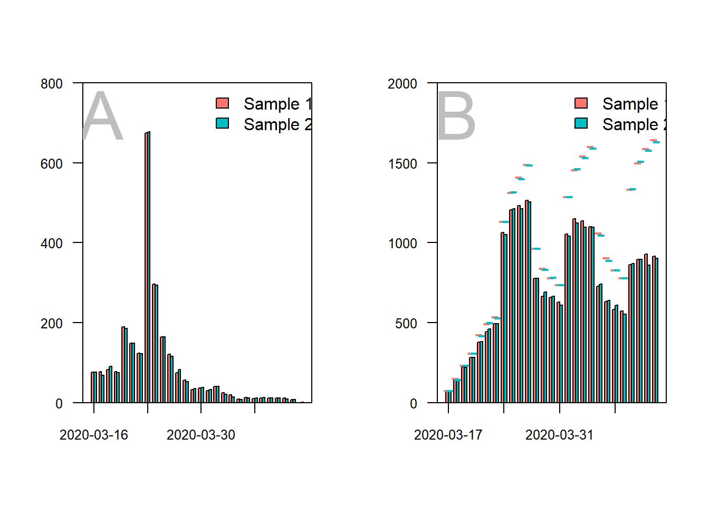
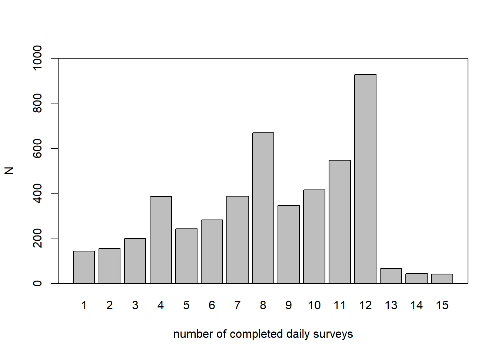
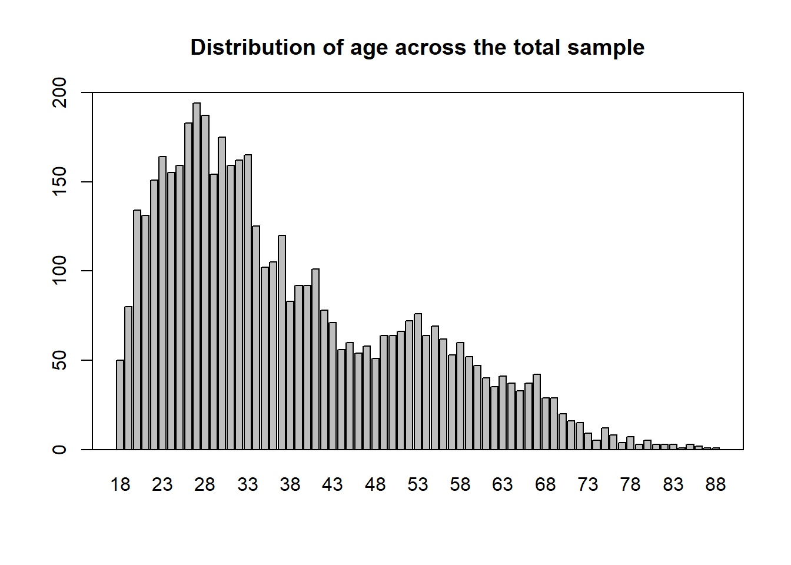

3 reproducibility
3.1 Part 1
3.1.2 References
Edward E. Walsh, M.D., Robert W. Frenck, Jr., M.D., Ann R. Falsey, M.D., Nicholas Kitchin, M.D., Judith Absalon, M.D.,corresponding author Alejandra Gurtman, M.D., Stephen Lockhart, D.M., Kathleen Neuzil, M.D., Mark J. Mulligan, M.D., Ruth Bailey, B.Sc., Kena A. Swanson, Ph.D., Ping Li, Ph.D., Kenneth Koury, Ph.D., Warren Kalina, Ph.D., David Cooper, Ph.D., Camila Fontes-Garfias, B.Sc., Pei-Yong Shi, Ph.D., Özlem Türeci, M.D., Kristin R. Tompkins, B.Sc., Kirsten E. Lyke, M.D., Vanessa Raabe, M.D., Philip R. Dormitzer, M.D., Kathrin U. Jansen, Ph.D., Uğur Şahin, M.D., and William C. Gruber, M.D.
3.1.3 Criteria artikel
| Transparency Criteria | Definition | Response Type | Response type Article | |
|---|---|---|---|---|
| Study Purpose | A concise statement in the introduction of the article, often in the last paragraph, that establishes the reason the research was conducted. Also called the study objective. | Binary | Yes | |
| Data Availability Statement | A statement, in an individual section offset from the main body of text, that explains how or if one can access a study’s data. The title of the section may vary, but it must explicitly mention data; it is therefore distinct from a supplementary materials section. | Binary | Yes | |
| Data Location | Where the article’s data can be accessed, either raw or processed. | Found Value | Op aanvraag | |
| Study Location | Author has stated in the methods section where the study took place or the data’s country/region of origin. | Binary; Found Value | No | |
| Author Review | The professionalism of the contact information that the author has provided in the manuscript. | Found Value | Te vinden bij Author information | |
| Ethics Statement | A statement within the manuscript indicating any ethical concerns, including the presence of sensitive data. | Binary | Yes | |
| Funding Statement | A statement within the manuscript indicating whether or not the authors received funding for their research. | Binary | Yes | |
| Code Availability | Authors have shared access to the most updated code that they used in their study, including code used for analysis. | Binary | No |
3.1.4 Overige data
Het protocol, de ethics en de data sharing statement zijn onder aan het artikel te vinden.
3.1.5 Extra’s over artikel
over het algenmeen is het een goed artikel, die de werking van twee verschillende vaccins voor covid-19 test. De meeste criteria zijn goed. Het experiment maakt gebruik van een placebotrail waar een deel van de mensen een nep vaccin krijgen en een deel van de mensen een echt vaccin.
3.2 Part 2
Link naar artikel https://osf.io/wqc25/
3.2.1 J:
Eerst maken ze een aantal nieuwe functies aan die ze verderop gaan gebruiken. Vervolgens laden ze de samplegroepen van het experiment in, ze controleren ook of er missing values zijn. ze maken een barplot van deze samples. Vervolgens gaan ze verschillende grafiek etc van deze data maken
3.2.3 Opdracht L, M en N
library(here)
# read data ---------------------------------------------------------------
# sample 1
sample1 <- read.csv(here("data","sample1_use for revision 1.csv"))
sample1 <- sample1[sample1$include_1,]
# sample 2
sample2 <- read.csv(here("data","sample2_use for revision 1.csv"))
sample2 <- sample2[sample2$include_1,]
# combine samples for the additional analyses
data <- rbind(sample1, sample2)
# packages ----------------------------------------------------------------
# functie inladen
gg_color_hue <- function(n) {
hues = seq(15, 375, length = n + 1)
hcl(h = hues, l = 65, c = 100)[1:n]
}
get_max_daily <- function(x){
x <- x + c(1:4, 9:12, 17:20, 25:27)
x <- x[x < ymd("2020-04-13 UTC")]
return(x)
}
# install.packages("lubridate")
library(lubridate)
# -------------------------------------------------------------------------
## define colors
c <- gg_color_hue(2)
col.s1 <- c[1]
col.s2 <- c[2]
# completed baseline surveys per day that are included in the study
data_l2_s1 <- unique(sample1[c("ID", "b_baseline_ended")])
data_l2_s2 <- unique(sample2[c("ID", "b_baseline_ended")])
# no missings on this variable
any(is.na(data_l2_s1[2]))## [1] FALSEany(is.na(data_l2_s2[2]))## [1] FALSEdate_s1 <- ymd_hms(data_l2_s1$b_baseline_ended)
hour(date_s1) <- 0
minute(date_s1) <- 0
second(date_s1) <- 0
date_s2 <- ymd_hms(data_l2_s2$b_baseline_ended)
hour(date_s2) <- 0
minute(date_s2) <- 0
second(date_s2) <- 0
# number of baseline surveys completed
t_date_baseline_1 <- table(ymd(date_s1))
t_date_baseline_2 <- table(ymd(date_s2))
t_date_baseline_1 <- c(t_date_baseline_1, "2020-04-12" = 0)
t_date_baseline_12 <- rbind(t_date_baseline_1, t_date_baseline_2)
# barplot sample 1 and 2 baseline participation ---------------------------
layout(matrix(1:2, 1, 2, byrow = TRUE))
b <- barplot(t_date_baseline_12, beside = TRUE, ylim = c(0, 800), names.arg = rep("", length(t_date_baseline_12)),
col = c(col.s1, col.s2), axes = FALSE)
box()
axis(2, las = 2, cex.axis = 0.8)
s <- seq(1, 28, 7)
labels <- colnames(t_date_baseline_12)[s]
axis(1, at = ((b[1,] + b[2,])/2)[s], labels = labels, cex.axis = 0.8)
text("A", x = ((b[1,] + b[2,])/2)[2], y = 800*.9, cex = 4, col = "grey")
legend(x = ((b[1,] + b[2,])/2)[15], y = 800, legend = c("Sample 1", "Sample 2"), fill = c(col.s1, col.s2), bty = "n")
# dates at which a daily survey could have been completed:
max_daily_dates_s1 <- lapply(ymd(date_s1), get_max_daily)
max_daily_dates_s2 <- lapply(ymd(date_s2), get_max_daily)
max_dates_s1 <- do.call("c", max_daily_dates_s1)
max_dates_s2 <- do.call("c", max_daily_dates_s2)
obtained_dates_s1 <- sample1$daily_date
obtained_dates_s2 <- sample2$daily_date
t_max_dates_s1 <- table(max_dates_s1)
t_max_dates_s2 <- table(max_dates_s2)
t_obtained_dates_s1 <- table(obtained_dates_s1)
t_obtained_dates_s2 <- table(obtained_dates_s2)
t_obtained_dates_s12 <- rbind(t_obtained_dates_s1, t_obtained_dates_s2)
b <- barplot(t_obtained_dates_s12, beside = TRUE, ylim = c(0, 2000),
names.arg = rep("", length(t_obtained_dates_s12)),
col = c(col.s1, col.s2), axes = FALSE)
box()
axis(2, las = 2, cex.axis = 0.8)
labels <- colnames(t_obtained_dates_s12)[s]
axis(1, at = ((b[1,] + b[2,])/2)[s], labels = labels, cex.axis = 0.8)
lines(y = t_max_dates_s1, x = b[1,], type = "p", pch = "-", col = col.s1, cex = 1.5)
lines(y = t_max_dates_s2, x = b[2,], type = "p", pch = "-", col = col.s2, cex = 1.5)
text("B", x = ((b[1,] + b[2,])/2)[2], y = 2000*.9, cex = 4, col = "grey")
legend(x = ((b[1,] + b[2,])/2)[15], y = 2000, legend = c("Sample 1", "Sample 2"), fill = c(col.s1, col.s2), bty = "n")
# difference obtained and maximum -----------------------------------------
obtained_total <- sum(t_obtained_dates_s12)
max_reports_total <- sum(c(t_max_dates_s1, t_max_dates_s2))
round(obtained_total/max_reports_total*100, 2)## [1] 75.74# average surveys per day -------------------------------------------------
median(colSums(t_obtained_dates_s12))## [1] 1468# average number of loneliness scores per participant ---------------------
s1_lst <- split(sample1, f = sample1$ID)
n_1 <- unlist(lapply(s1_lst, function(x) sum(!is.na(x$loneliness))))
mean(n_1)## [1] 8.150741sd(n_1)## [1] 3.359446range(n_1)## [1] 0 15s2_lst <- split(sample2, f = sample2$ID)
n_2 <- unlist(lapply(s2_lst, function(x) sum(!is.na(x$loneliness))))
mean(n_2)## [1] 8.124586sd(n_2)## [1] 3.399153range(n_2)## [1] 0 15# distribution of participants across number of daily surveys
layout(1)
b <- barplot(table(c(n_1, n_2)), main = "", ylab = "valid loneliness scores",
xlab = "number of completed daily surveys",
ylim = c(0, 900), lwd = 1.3)
box(lwd = 1.3)
# surveys, not valid measures
n_1 <- unlist(lapply(s1_lst, function(x) nrow(x)))
n_2 <- unlist(lapply(s2_lst, function(x) nrow(x)))
mean(n_1)## [1] 8.269769sd(n_1)## [1] 3.318693range(n_1)## [1] 1 15mean(n_2)## [1] 8.25207sd(n_2)## [1] 3.359575range(n_2)## [1] 1 15b <- barplot(table(c(n_1, n_2)), main = "", ylab = "N",
xlab = "number of completed daily surveys",
ylim = c(0, 1000), lwd = 1.3)
box(lwd = 1.3)
# N and measurement occasions ---------------------------------------------
sample1_lst <- split(sample1, f = sample1$ID)
sample2_lst <- split(sample2, f = sample2$ID)
length(sample1_lst)## [1] 2428length(sample2_lst)## [1] 2416length(sample1_lst) + length(sample2_lst)## [1] 4844nrow(sample1)## [1] 20079nrow(sample2)## [1] 19937nrow(sample1) + nrow(sample2)## [1] 40016# demographic variables ---------------------------------------------------
names <- names(sample1)
variables_level_2 <- grep(x = names, pattern = "ID|group|b_|var_|federal", value = TRUE)
data_l2_s1 <- unique(sample1[variables_level_2])
data_l2_s2 <- unique(sample2[variables_level_2])
## age
mean(data_l2_s1$b_demo_age_1)## [1] 37.29462sd(data_l2_s1$b_demo_age_1)## [1] 14.32523mean(data_l2_s2$b_demo_age_1)## [1] 37.57201sd(data_l2_s2$b_demo_age_1)## [1] 14.24426# generate level 2 data frame for all participants
data_l2 <- unique(data[c(grep(x = names(data), pattern = "ID|b_demo|b_work|b_corona", value = TRUE))])
mean(data_l2$b_demo_age_1)## [1] 37.87923sd(data_l2$b_demo_age_1)## [1] 14.40773barplot(table(data_l2$b_demo_age_1), main = "Distribution of age across the total sample", lwd = 1.3, ylim = c(0, 200))
box(lwd = 1.3)
## quartiles of age
quantile(data_l2$b_demo_age_1)## 0% 25% 50% 75% 100%
## 18 27 34 48 88